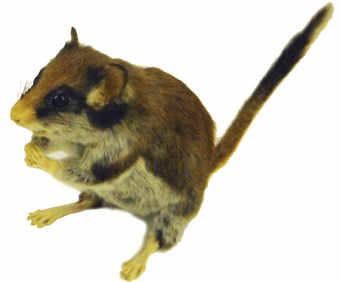
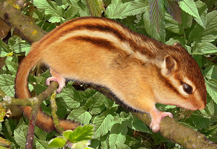

|
  |
||
 |
|
||
|
Pour combler le vide... Les gliridés constituent un groupe de rongeurs dont les représentants européens sont les loirs, les muscardins et les lérots. Les rongeurs de cette famille étaient assez répandus dans le miocène européen et ont montré une diversité foisonnante.  La famille a bénéficié de la disparition soudaine des cricétidés entre MN3 et MN5, le fameux «Cricetid vaccum», pour prendre son essor sans pourtant jamais devenir un groupe dominant. Pour ce qui concerne les faluns d’Anjou Touraine, cette famille n’a pratiquement jamais vraiment été signalée à l’exception de Peridyromys occitanus, retrouvé dans les sables sous-jacents aux Beilleaux (Quelques rares dents).Le groupe est donc pratiquement inconnu dans les faluns. Il n’a jamais été proposé d’explication à cette quasi-absence quand par contraste, les petits lagomorphes sont très abondants. A mon avis, la taille minuscule des dents est certainement la raison majeure de ce grand vide. Une couronne de Mys Pays de la Loire...
Pourtant c’est précisément à l’époque des faluns que les gliridés ont connu leur plus grande diversité. Au Mn 5, 4 grandes familles sont encore présentes avec de très nombreuses espèces. Pour être honnête, je ne suis pas capable de déterminer des dents de glidirés. J’ai quand même extrait celle-ci, parce qu’elle diffère notablement de toutes les autres avec de nombreux sillons. C’est concordant avec les caractères qu’on connait chez les glirinae dont sont issus tous les gliridés modernes.
Enfin un loir en Loire... Ce type de dent ne laisse de surprendre pour un rongeur. On s’attendrait à des couronnes hautes pour compenser l’abrasion par les tiges végétales.  Or la couronne chez les gliridés est toujours très basse. Mais ces animaux ne sont pas de purs herbivores, puisqu’ils ingèrent des fruits secs ou charnus, des insectes, des escargots, des œufs… En fait ils ont une bonne tendance omnivore.3 Un peu comme les gliridés actuels, on pense que les animaux du Miocène devaient avoir colonisé des biotopes variés allant de forêts denses aux steppes quasi-arides, même si l’habitat de prédilection des gliridés reste un environnement boisé. Ces animaux ne sont pas faciles à trouver dans les faluns. Aussi discrets maintenant qu'au Miocène!
Un peu plus de gliridea...
La détermination des genres ou des espèces est très compliquée. Ce que je comprends de ces fossiles c'est que la dent 2 est beaucoup plus grosse que les autres et doit appartenir à une espèce différente des autres. Par ailleurs si on compare la dent 4 et la dent 5, on s'aperçoit que c'est la même position dentaire mais l'ornementation de la couronne est très différente et donc on peut en conclure que ces 2 dents appartiennent à 2 espèces différentes. Même chose pour les 2 molaires supérieures 3 (Numéros 3 et 6). Alors je verrais bien au moins 3 espèces dans ce collier de dents...
|
|||